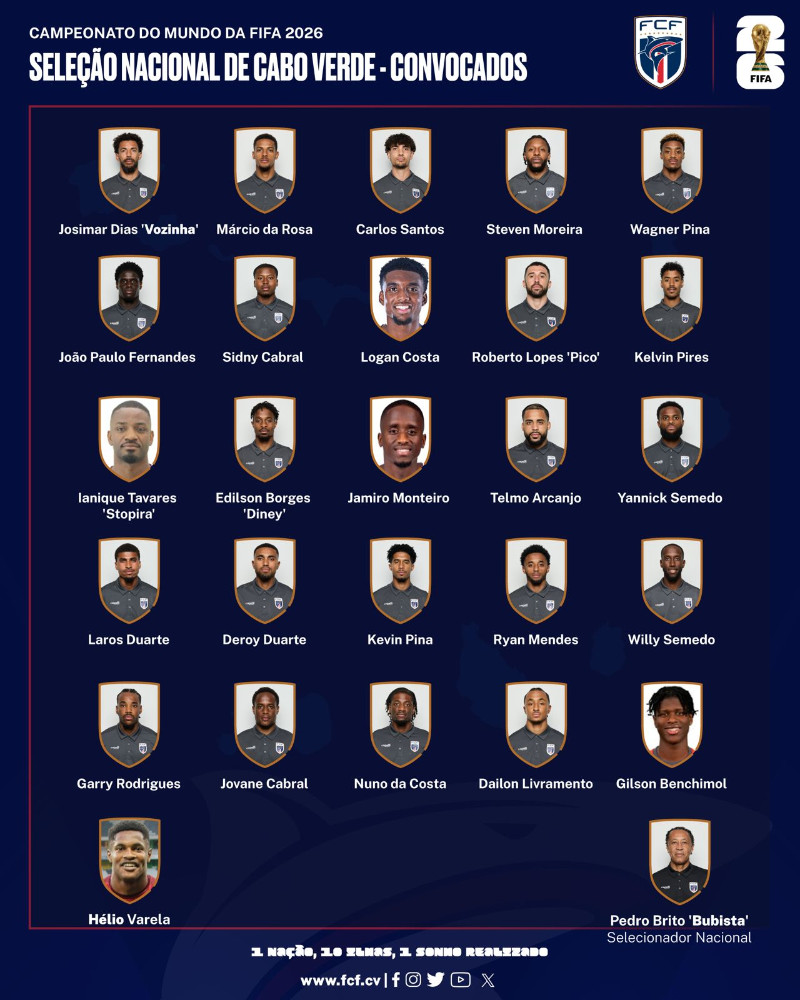

Federação Cabo-Verdiana de Futebol

Rumo à primeira conquista!

Curiosidade
A seleção Cabo-Verdiana estreou na Copa do Mundo 2026 com um feito histórico. A seleção africana empatou em 0 a 0 com a Espanha no dia 15 de junho, em Atlanta, nos Estados Unidos, conquistando seu primeiro ponto na competição.
Lista de Jogadores Convocados

Goleiros
- Josimar Dias 'Vozinha'
- Márcio da Rosa
- Carlos Santos
Defensores
- Steven Moreira
- Wagner Pina
- João Paulo Fernandes
- Sidny Cabral
- Logan Costa
- Roberto Lopes 'Pico'
- Kelvin Pires
- Ianique Tavares 'Stopira'
- Edilson Borges 'Diney'
Meio-campistas
- Jamiro Monteiro
- Telmo Arcanjo
- Yannick Semedo
- Laros Duarte
- Deroy Duarte
- Kevin Pina
Atacantes
- Ryan Mendes
- Willy Semedo
- Garry Rodrigues
- Jovane Cabral
- Nuno da Costa
- Dailon Livramento
- Gilson Benchimol
- Hélio Varela